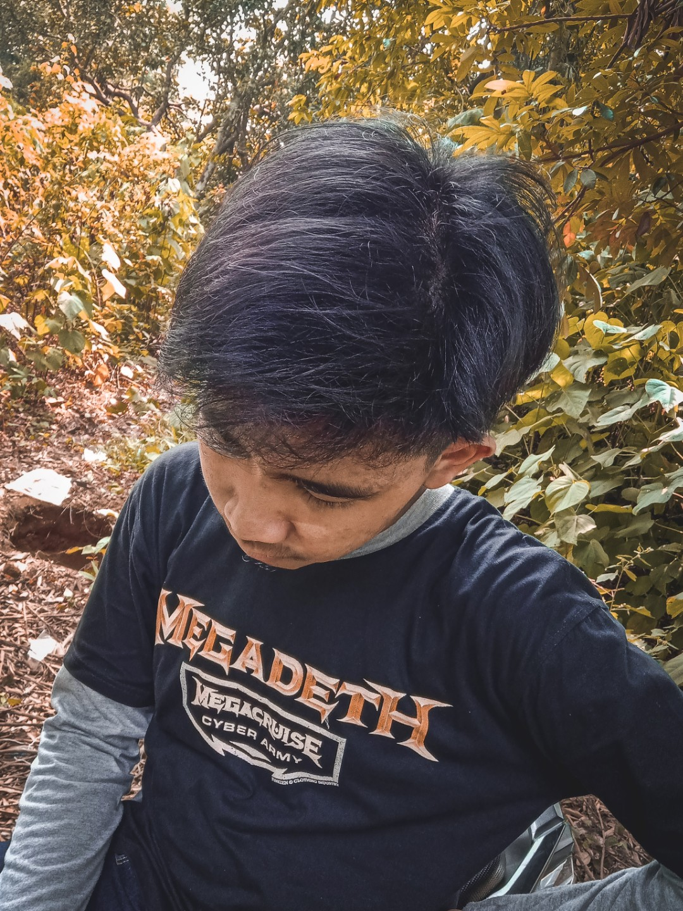
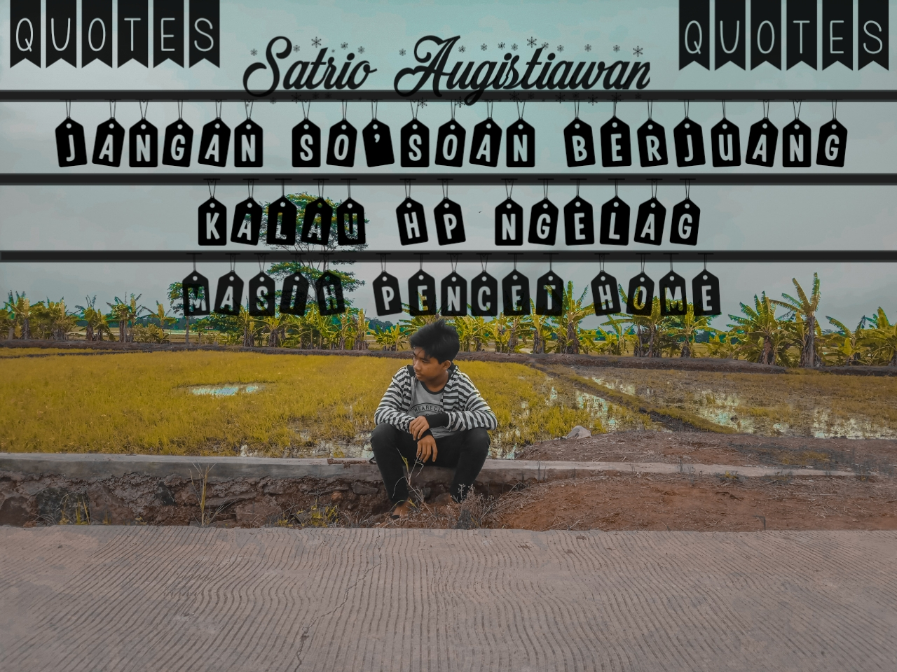
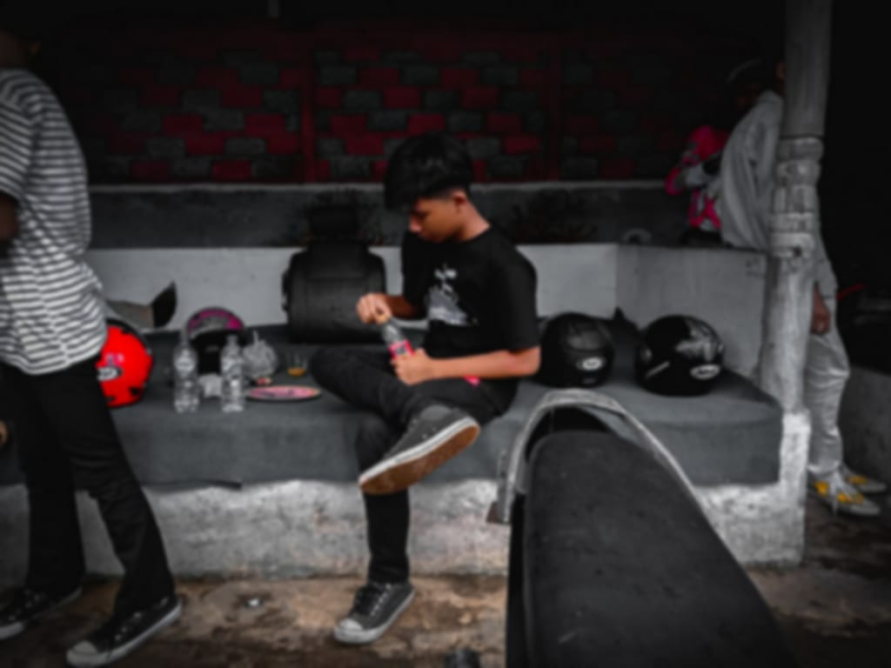
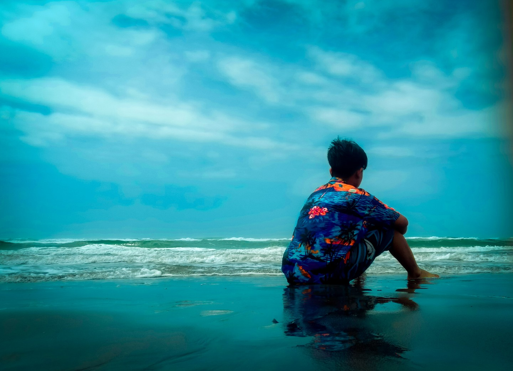
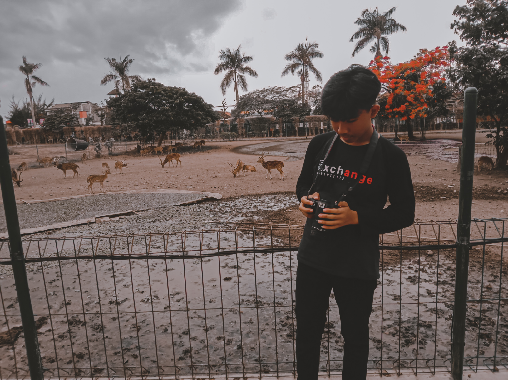
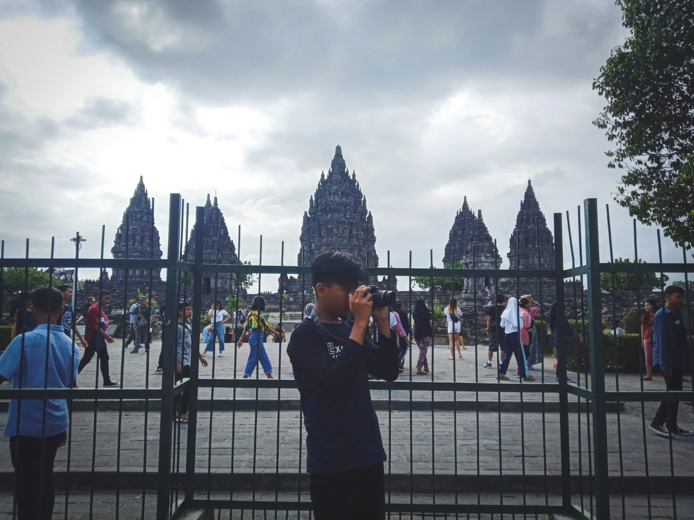

Cerita Anehnya Suryo
Ga licik ga makan
Membuang kanvas lama yang dilukis indah dengan tinta permanen dan memulainya lagi dari awal di kanvas baru itu tidak mudah
Simple Gallery Suryo
Foto sejuta kenangan
Tiap luka tidak selalu menjadi duka, jangan selalu salahkan sang tinta. asalkan kau tahu,tinta permanen hanya butuh tinta sementara untuk menghapusnya, cukup satukan saja kedua itu. Niscaya, sang tinta permanen dapat terhapus, yang kau butuhkan hanyalah orang baru, untuk melupakan orang lama. Namun, kau kehilangan keduanya diwaktu yang sama.

Di Fotoin Mantan
Di Fotoin Mantan

Sipaling Quotes
Sipaling Quotes

Sebelum Di Tilang
Sebelum Di Tilang

Di Parangtritis
Di Parangtritis

Di Prambanan
Di Prambanan

Lagi Motoin Bule
Lagi Motoin Bule